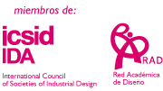

| |
La Carrera de Diseño Industrial en la Universidad El Bosque tiene un enfoque del diseño como actividad plástica y comunicativa que responde de manera activa al mercado laboral y da oportunidad al estudiante de ir encontrando sus fortalezas para que perfile su futura actividad profesional a partir de éstas.
El currículo está estructurado por un ciclo básico (2 años) en el cual se desarrollan habilidades fundamentales y se aprenden herramientas para ser diseñador, luego por un ciclo de profesionalización (2 años) en el que se toman las habilidades profesionales en diseño con base en variados espacios de profundización temática, y finalmente un ciclo de grado (1 año) donde el estudiante puede desarrollar su énfasis laboral.
Perfil Profesional
El Diseñador Industrial de la Universidad El Bosque estará en capacidad de analizar su entorno y desarrollar creativamente propuestas que optimicen las funciones, valor, apariencia, pertinencia y capacidad comunicativa de objetos, productos o sistemas industriales; buscando el beneficio tanto de usuarios y fabricantes, como de las demás instancias que intervienen en el proceso de diseño.
En específico, el diseñador estará en capacidad de dar instrucciones precisas a través de dibujos, planos, modelos y descripciones para la realización de proyectos con diseño, aportando en cuanto a las características de concepto, estructura y forma bi y tridimensional. En ese escenario, la comprensión de aspectos como la estética, la capacidad de comunicación, la composición y la capacidad proyectiva son esenciales; así como la tecnología, condiciones de mercado y distribución, exhibición, empaques, impacto ambiental, entre otros, son fundamentales para desempeñarse en ámbitos que van de lo estatal a lo empresarial.
Áreas de énfasis
- Desarrollo de diseño
- Gestión de diseño
- Medios y diseño
Algunas electivas propias
- Proyectos de comunicación
- Arquitectura, ciudad y espacio público
- Dibujo avanzado CAD
- Ilustración digital
- Suite creativa en acción
- Biónica
- Rendering
- Herramientas informáticas para gestión de proyectos
- Acabados arquitectónicos
- Diseño de puestos de trabajo
- Diseño web
- Innovación
- 3D Max
- Cerámica
- Diseño aplicaciones para móviles
- Diseño de exhibición comercial
- Ingeniería de papel |
|
¿Qué hace un diseñador?
Domina las herramientas necesarias para componer, conformar y comunicar eventos plástico formales a un nivel profesional.
Comprende el entorno teórico y práctico de la disciplina y la profesión, haciendo aportes técnicos y/o conceptuales por medio de su exploración plástico - formal y de las reflexiones que de tal exploración se originan.
Comunica coherentemente y con pertinencia, basándose en el diseño como principal herramienta, acorde a un contexto socio cultural y a partir de los recursos plástico formales que domina.
Proyecta en diferentes medios y escalas productivas, según las condiciones técnicas y sociales del contexto en el que el proyecto de diseño se origine y hacia el cual esté dirigido.
Produce programas comprensibles para desarrollar nuevos productos, bienes de capital o servicios, o modificar los existentes, con base en la armonización de diferentes factores de diseño que intervienen en la concepción, producción, distribución, consumo e impacto ambiental de los productos industriales.
Participa en equipos interdisciplinarios haciendo del diseño un valor agregado relevante.
Se desempeña como profesional íntegro asumiendo su responsabilidad desde un enfoque biopsicosocial y cultural.
Temas de profundización
Vivienda Sostenibilidad Movilidad Vehículos Merchandising visual Diseño para producción Artesanía Objetos Producción Diseño doméstico Diseño comercial Constructivismo Transporte Salud Vitrina sCiudad Espacio público Comunicación Dibujo digital Producto
 |
|